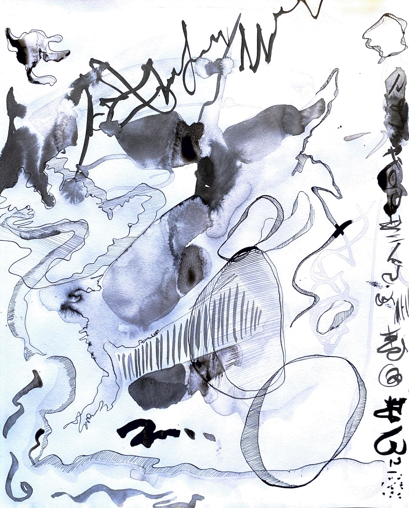
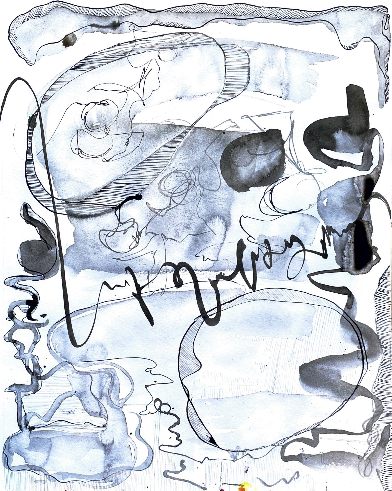
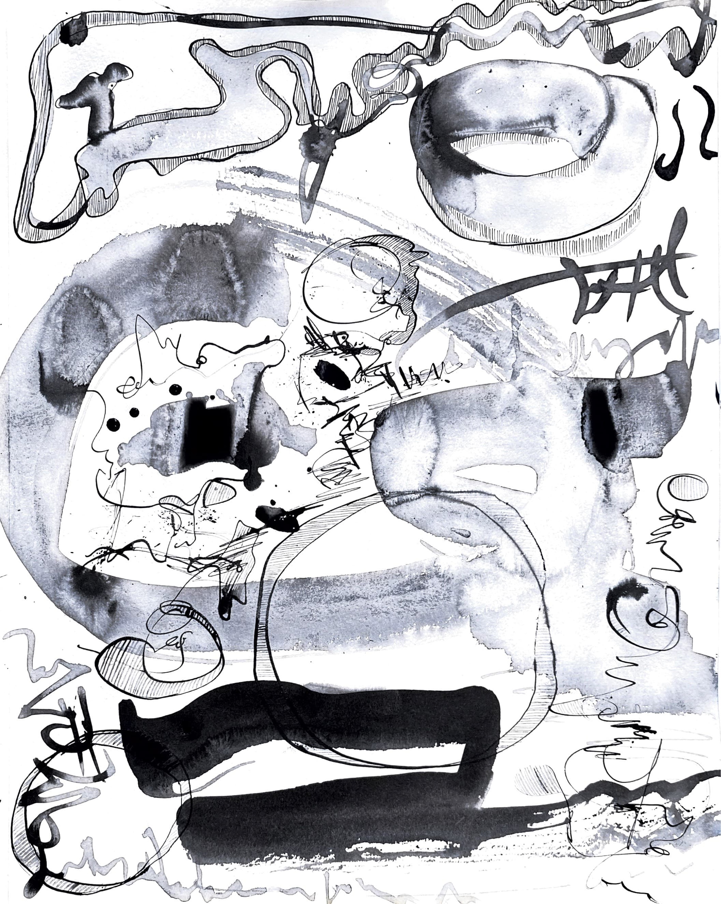

Untitled (Ribbon Offering)
Acryic and gel gloss on canvas. 24x16"
At home, I found a ribbon that had been sitting on the bedside table in my childhood bedroom for years.
I don’t even remember when or how it had ended up there. I had barely painted in years.
Sometimes, objects carry spiritual import just by virtue of having been there, and for a long time.
--> made for the exhibition theme "Spiritual Objects" (Brown/RISD, May 2022).

- - - - - - - - - -
Memory (series) (2017)

Preschool (Memory 1)
Acryic, pen, gel gloss, collage on canvas. 27x26"


Memory 2
Memory 3

Olivia's Room (Memory 4)
Acrylic, gel gloss, collage on canvas. 37x28"
- - - - - - - - - -
  
Triptych
Ink on paper. 9x12" each. 2021

Self Study 1
Pen, high flow acrylic on tracing paper, Yupo paper. 8.5x11". 2018

Self Study 2
Pen, high flow acrylic on tracing paper, Yupo paper. 8.5x11". 2018

Room
Acrylic, conté, gel gloss on canvas. ~20x45". 2018


Interior
Acrylic on tracing paper, Bristol board. 12x16". 2017